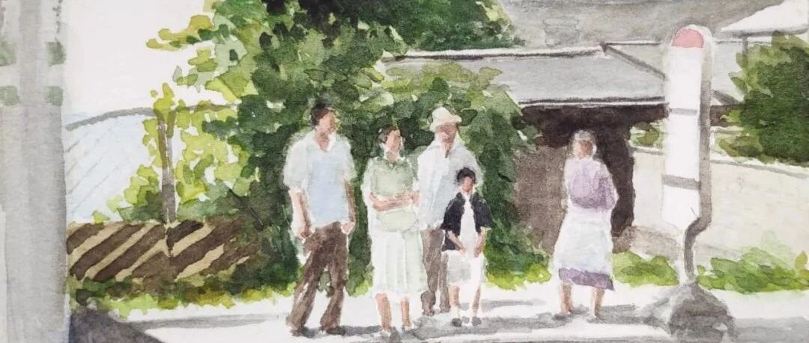

Still Walking.
有没有看到封面就猜到今天主题的旁友~
今天的水彩是关于是枝裕和的电影《步履不停》。
其实我是个看电影喜欢看恐怖悬疑类的人，
对于这种慢吞吞的电影很少会有兴趣，
之所以想看这部电影，
要追溯到上周听到的一个演讲……
一个艺术家小哥哥分享自己如何找到创作灵感，
或者说如何找到自己的创作风格。
他说的很简单，就是向内寻找，
从自己的生活、经历中去寻找。
他当时举了两个例子，
一个就是宫崎骏，
宫崎骏之所以那么迷恋飞行器和飞行，
在创作中频繁出现飞行器的身影，
就是因为宫崎家族经营着一家制造战斗机的企业，
从小耳濡目染，日后成就了自己的风格。
另外一个就是是枝裕和，
《步履不停》就是是枝裕和在母亲去世之后创作的。

他的介绍让我对这部电影充满兴趣，
周末赶紧安排上了。
真的是非常优秀的一部电影，
充满生活的细节和琐事同时震撼人心，
可以感受到作者的悲伤和遗憾，
看完之后，再听到主题曲还是会酸酸的，
非常值得一看再看。

好啦今天先到这里，
欢迎大家留言再给我推荐好看的电影或者书~
也欢迎点赞、转发or给个“在看”呦~
下周见~